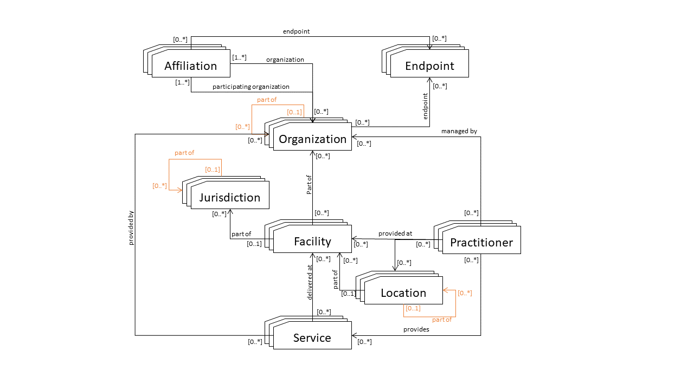
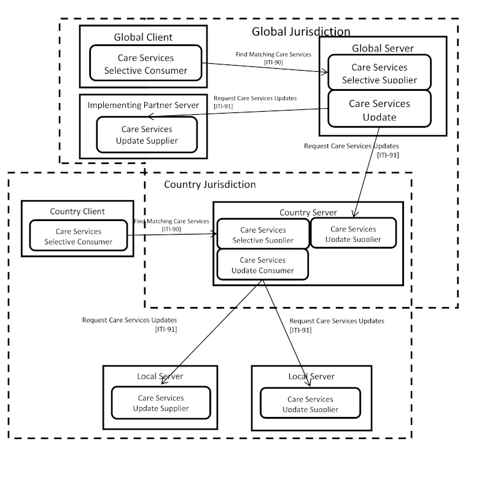

Mobile Care Services Discovery (mCSD)
3.7.0 - ballot

Mobile Care Services Discovery (mCSD)
3.7.0 - ballot

This page is part of the IHE ITI Mobile Care Services Discovery (v3.7.0: Public-Comment Ballot 3) based on FHIR R4. The current version which supercedes this version is 3.8.0. For a full list of available versions, see the Directory of published versions 
The Mobile Care Services Discovery (mCSD) Profile supports discovery of care services resources using a RESTful interface in interrelated, federated environments.
Use cases and solutions using mCSD are outlined in the mCSD White Paper.
The profile supports querying for:
Organization – Organizations are “umbrella” entities; these may be considered the administrative bodies under whose auspices care services are provided such as Healthcare Information Exchanges(HIEs), Integrated Delivery Networks (IDNs), Non-Government Organizations (NGOs), Faith-Based Organizations (FBOs) or even a one-physician family practice. An organization has a unique identifier and may have additional administrative attributes such as contact person, mailing address, etc. Departments of an institution, or other administrative units, may be represented as child Organizations of a parent Organization.
Facility – Facilities are physical care delivery sites such as hospitals, clinics, health outposts, physician offices, labs, pharmacies, etc. A Facility has a unique identifier, geographic attributes (address, geocode), contact attributes, attributes regarding its hours of operation, etc. Each Facility is defined by a pairing of Location and Organization.
Location – Locations are physical places where care can be delivered such as facilities, buildings, wards, rooms, or vehicles. Locations also include jurisdictions such as a village districts or regions. A Location has a unique identifier and may have geographic attributes (address, geocode), attributes regarding its hours of operation, etc. Each Location may be related to one Organization. A location may have a hierarchical relationship with other locations.
Jurisdiction – Jurisdictions are political administrative units or other territories over which authority is exercised. A Jurisdiction has a unique identifier, geographic attributes, etc. Jurisdictions include political administrative units such as village districts or regions. Each Jurisdiction is defined by a pairing of Location and Organization.
Practitioner – A Practitioner is a health worker such as defined by WHO (http://www.who.int/whr/2006/06_chap1_en.pdf); a Practitioner might be a physician, nurse, pharmacist, community health worker, district health manager, etc. Practitioners have contact and demographic attributes. Each Practitioner may be related to one or more Organizations, one or more Locations and one or more Healthcare Services. Specific attributes may be associated with the Practitioner relationship with these other entities.
Healthcare Service – Each healthcare service has a unique identifier. Examples include surgical services, antenatal care services, or primary care services. The combination of a Healthcare Service offered at a Location may have specific attributes including contact person, hours of operation, etc.
Endpoint - An Organization may be reachable for electronic data exchange through electronic Endpoint(s). An Endpoint may be a FHIR server, an IHE web services actor, or some other mechanism. If an Organization does not have an Endpoint, it may still be reachable via an Endpoint at its parent Organization or an affiliated Organization.
OrganizationAffiliation - An Organization may have relationships with other organizations that are not hierarchical. These relationships may indicate an electronic routing path to other organizations that cannot be reached directly. OrganizationAffiliation can be used to specify relationships such as supply chains or administrative reporting structures.
The capabilities detailed in this profile support consumer-centric queries such as finding “where is the closest youth mental health services clinic” or “what are the hours of a physiotherapist near my workplace”. In addition, mCSD supports crucial health system management workflows. This can include reporting and analyses, such as “what are my health human resource capacities, by facility, by cadre,” “what are all the services offered at this facility,” or conversely, “where are all the facilities that offer this service.” The mCSD Profile may be employed to support, for example, the Provider Queries listed by the US Office of the National Coordinator as part of the Standards and Interoperability Framework (http://wiki.siframework.org/file/view/ESIQuery and Response.pdf). In addition, mCSD can enable connectivity by providing service endpoint lookup, such as “What is the FHIR server for this organization?”.
The loosely coupled design and flexible querying capability of the mCSD Profile means it can be deployed within a variety of eHealth architectures and support a wide array of care workflows.
This section defines the actors, transactions, and/or content modules in this profile. Further information about actor and transaction definitions can be found in the IHE Technical Frameworks General Introduction Appendix A: Actors and Appendix B: Transactions.
Figure 1:46.1-1 shows the actors directly involved in the mCSD Profile and the relevant transactions between them. If needed for context, other actors that may be indirectly involved due to their participation in other related profiles are shown in dotted lines. Actors which have a mandatory grouping are shown in conjoined boxes.
Figure 1:46.1-1: mCSD Actor Diagram
Table 1:46.1-1 lists the transactions for each actor directly involved in the mCSD Profile. To claim compliance with this profile, an actor shall support all required transactions (labeled “R”) and may support the optional transactions (labeled “O”).
Table 1:46.1-1: mCSD Profile - Actors and Transactions
| Actors | Transactions | Initiator or Responder | Optionality | Reference |
|---|---|---|---|---|
| Care Services Selective Consumer | Find Matching Care Services [ITI-90] | Initiator | R | ITI TF-2: 3.90 |
| Care Services Selective Supplier | Find Matching Care Services [ITI-90] | Responder | R | ITI TF-2: 3.90 |
| Care Services Update Consumer | Request Care Services Updates [ITI-91] | Initiator | R | ITI TF-2: 3.91 |
| Care Services Update Supplier | Request Care Services Updates [ITI-91] | Responder | R | ITI TF-2: 3.91 |
Most requirements are documented in ITI TF-2: Transactions. This section documents any additional requirements on mCSD actors.
mCSD supports querying for Organization, Facility, Location, Practitioner, Healthcare Service, OrganizationAffiliation, and Endpoint. However, a Care Services Selective Supplier or Care Service Update Supplier is not required to contain data on all of these.
The Care Services Selective Consumer queries the Care Services Selective Supplier for information about mCSD resources.
No additional requirements. The following are two example capability statement resources that a Care Services Selective Consumer could support:
The Care Services Selective Supplier processes received queries from Care Services Selective Consumers and returns information about mCSD resources.
The Care Services Selective Supplier shall publish an instance CapabilityStatement at the metadata endpoint following ITI Appendix Z.3 using the FHIR capabilities interaction. All supported search parameters and search methods (GET, POST) shall be specified. The search parameters and message semantics defined in [ITI-90] shall be supported, other parameters may be supported.
This capabilities response will typically include all of the capabilities inclusive of all grouped actors and additional functionality. The following are two examples:
The Care Services Update Consumer can query for updates since a previous refresh, to information about mCSD resources from one or more Care Services Update Suppliers.
No additional requirements. The following are two example capability statement resources that a Care Services Update Consumer could support:
The Care Services Update Supplier can provide updates about mCSD resources in response to a refresh request from a Care Services Update Consumer. The updates include new or modified information since a previous refresh.
The Care Services Update Supplier shall publish an instance CapabilityStatement at the metadata endpoint following ITI Appendix Z.3 using the FHIR capabilities interaction.
All supported interactions shall be specified. The search parameters and message semantics defined in [ITI-91] shall be supported, other parameters may be supported.
This capabilities response will typically include all of the capabilities inclusive of all grouped actors and additional functionality. The following are two examples:
Options that may be selected for each actor in this profile, if any, are listed in Table 1:46.2-1. Dependencies between options when applicable are specified in notes.
Table 1:46.2-1: mCSD - Actors and Options
| Actor | Option Name | Reference |
|---|---|---|
| Care Services Selective Consumer | Location Distance Option | Section 1:46.2.1 |
| Care Services Selective Supplier | Location Distance Option | Section 1:46.2.1 |
| Care Services Update Consumer | No options defined | -- |
| Care Services Update Supplier | No options defined | -- |
The Location Distance Option enables querying Location resources based on relative distances.
A Care Services Selective Consumer or Care Services Selective Supplier that supports the Location Distance Option will implement the semantics for the Location Distance Option of the Find Matching Care Services [ITI-90] transaction. See ITI TF-2: 2:3.90.4.1.2.2 and ITI TF-2: 2:3.90.4.2.2.2.
An actor from this profile (Column 1) shall implement all of the required transactions and/or content modules in this profile in addition to all of the requirements for the grouped actor (Column 2).
Section 1:46.5 describes some optional groupings that may be of interest for security considerations and Section 1:46.6 describes some optional groupings in other related profiles.
Table 1:46.3-1: mCSD - Required Actor Groupings
| mCSD Actor | Actor to be grouped with | Reference | Content Bindings Reference |
|---|---|---|---|
| Care Services Selective Consumer | None | -- | -- |
| Care Services Selective Supplier | None | -- | -- |
| Care Services Update Consumer | None | -- | -- |
| Care Services Update Supplier | None | -- | -- |
The Mobile Care Services Discovery (mCSD) Profile supports queries for resources related to care services discovery. The relationship between these entities is illustrated in Figure 1:46.4.1-1.

Figure 1:46.4.1-1: Top-level Relationships between Care Services Entities
This profile enables tracking of changes to, searching for, and retrieval of, a set of resources. The creation, update, deletion and other maintenance activities of those resources is out of the scope of this profile.
The patient, Vera Brooks, consults with her physician who recommends surgery. The physician can assist the patient in finding a suitable surgeon, taking into consideration the location and specialty of the surgeon.
Vera Brooks sees her family physician, Dr. West, regarding a recent knee injury.
Dr. West diagnoses the problem as a torn ACL and decides to refer Vera to an orthopedic surgeon.
Dr. West uses her EMR query tool, which implements a Care Services Selective Consumer to search for orthopedic surgeons within 30km of Vera’s home.
The EMR retrieves the information from a Healthcare Worker Registry (HWR) and displays it to Dr. West.
Vera and Dr. West decide on an orthopedic surgeon; Dr. West prepares a referral.
The interactions between the various actors in this use case are shown in Figure 1:46.4.2.1.2-1.
Figure 1:46.4.2.1.2-1: Provider Query Use Case
During an emergency event, medical volunteers may report to assist. At an emergency site, the mCSD service can be queried to quickly identify and grant permission to credentialed providers to enter the scene.
During Hurricane Katrina, health care volunteers were turned away from disaster sites because there was no means available to verify their credentials. During the Ebola outbreak in West Africa, it was unclear which health workers were available and had been trained in clinical care techniques.
Resources from jurisdictional areas can be reported up to a central location so there is a single point of access. This would make it easier for responders on location to verify the credentials of a reporting health worker.
A jurisdictional (state/district) Care Services Update Supplier will provide data to a central Care Services Update Consumer (National HIE).
The National HIE will be a Care Services Update Consumer grouped with a Care Services Selective Supplier.
An emergency responder (e.g., police on site controlling access) can use a Care Services Selective Consumer to validate the credentials of a reporting health worker from the central Care Services Update Supplier.
Based on the result, the emergency responder can allow or deny access to the reporting health worker.
The interactions between the various actors in this use case are shown in Figure 1:46.4.2.2.2-1.
Figure 1:46.4.2.2.2-1: Federated Data Site Management Workflow
Projects like the U.S. President’s Emergency Plan for AIDS Relief (PEPFAR)’s Data for Accountability, Transparency, and Impact (DATIM) need to have public health and service delivery indicators reported from a large number of sites (health facilities, communities, warehouses) within an Operating Unit (country/region). Within an Operating Unit, there are multiple, possibly overlapping, jurisdictions in operation which are managed by multiple organizations (e.g., ministries of health (MoH), faith-based organizations, international non-governmental organizations). The project needs to receive indicator submissions from pre-existing data systems hosted by these organizations. This data exchange requires a way to share site lists and implement identifier mapping between the sites in these lists.
Figure 1:46.4.2.3.1-1: Cross-Jurisdictional Data Exchange
An Operating Unit (OU) will run a Care Services Update Consumer and Care Services Update Supplier for a specific geographic area (e.g., country). This Update Consumer will query other organizations (ministries of health, partners) operating in the geographic area to get updated site data for the sites managed by the OU.
An OU Update Consumer will query a sub-unit Care Services Update Suppliers (e.g., MoH) to get an updated list of sites under the sub-unit.
An OU Update Consumer will query a subunit Care Services Update Suppliers (e.g., partner) to get an updated list of sites under the subunit.
The OU Update Consumer will use entity matching to determine if there are duplicated sites in the combined data and flag them for review. (See https://wiki.ohie.org/display/documents/OpenHIE+Entity+Matching+Service.)
The interactions between the various actors in this use case are shown in Figure 1:46.4.2.3.2-1.
Figure 1:46.4.2.3.2-1: Cross-jurisdictional Site Management Workflow
A developing country has decided to implement a Master Facility List (MFL) based on recommendations from the WHO in the MFL Resource Package (https://www.who.int/healthinfo/country_monitoring_evaluation/mfl/en/). This resource includes a minimum data set to uniquely identify, locate, and contact a specific facility. Since this will be a single source of information for the country, there may be differing hierarchies that need to be supported for the facilities. For example, one hierarchy would be the administrative hierarchy for the country (region, district, county). Another would be the supply chain hierarchy where hubs may be located separately from administrative regions. Yet another could be a reporting hierarchy used to send data to international organizations.
A Master Facility List (MFL) will run a Care Services Update Supplier and Care Services Selective Supplier for an entire country. A Human Resources Information System (HRIS) will run a Care Services Update Consumer to retrieve the list of facilities. A Logistics Management Information System (LMIS) will run a Care Services Update Consumer to retrieve the list of facilities.
An HRIS will query the MFL for an updated list of facilities where Practitioners can provide care.
An LMIS will query the MFL for an updated list of facilities for the supply chain to deliver health care supplies.
The MFL will return updated facilities to each of these systems with multiple hierarchies.
The interactions between the various actors in this use case are shown in Figure 1:46.4.2.4.1-1.
Figure 1:46.4.2.4.2-1: Master Facility List Workflow
In this use case, a healthcare worker needs to identify the organizations active in the State/Province Health Information Exchange (HIE) that have been added since 2017, to make contact with new organizations and negotiate future clinical exchange.
Membership in an HIE is a more dynamic and transitory business relationship than the “parent-child” hierarchy represented by Organization.partOf. For these more flexible business relationships, the OrganizationAffiliation resource allows for organizations to relate to each other in non-hierarchical and more dynamic business relationships. Unlike partOf, the relationship is itself a resource, so it can be categorized with codes, status, etc.
In the example below:
The organization defines a role for the relationship, e.g., “HIE/HIO” or “member”, and the participatingOrganization fills the role.
Figure 1:46.4.2.5.1-1: Organization.partOf vs. Affiliation
organization is the HIE, active is true, and period.start is 2017 or later.The interactions between the various actors in this use case are shown in Figure 1:46.4.2.5.2-1.
Figure 1:46.4.2.5.2-1: Health Information Exchange (HIE) Membership Discovery Workflow
Users in Health IT systems often need to be able to obtain clinical information electronically from outside systems, for example, in preparation for an encounter. This use case describes how a user in a system identifies the organizations a patient has received care from, as well as criteria for the kinds of clinical documents of interest, and then how their EMR queries the directory for a Health Information Exchange (HIE) to search for each organization and a compatible services endpoint the EMR can use.
An HIE publishes a directory that contains all of its member organizations and their electronic endpoints.
Note: Guidance for usage of endpoints in directories is provided here.
The diagram below shows an excerpt of the HIE directory, showing one participant in the HIE that implements IHE XCA with two Endpoints, and another that only uses one.
Figure 1:46.4.2.6.1-1: Health Information Exchange
The interactions between the various actors in this use case are shown in Figure 1:46.4.2.6.2-1.
Figure 1:46.4.2.6.2-1: Health Information Exchange (HIE) Endpoint Discovery Workflow
Actors are expected to follow the recommendations and requirements found in ITI TF-2: Appendix Z.8 “Mobile Security Considerations”.
The resources exchanged in this profile may contain information which pose a privacy risk, or in some cases, a safety risk, to providers and other personnel, as well as patients. For example, practitioner phone numbers and home addresses may be conveyed. Implementers should determine what data will be exposed by the system and what level of public access there will be if any.
The Endpoint Resources exchanged in this profile will expose information about the particular APIs and web services running on the underlying host systems. This might attract malicious activity or provide hints to potential attackers on how to attack a particular host system. Implementers should consider this when determining the access policies for these Resources. System administrators for the underlying host systems must follow industry best practices for authentication, authorization, auditing, timely application of software patches, etc.
There are many reasonable methods of security for interoperability transactions which can be implemented without modifying the characteristics of the transactions in the mCSD Profile. The use of TLS is encouraged, specifically the use of the ATNA Profile (see ITI TF-1: 9).
User authentication on mobile devices and browsers is typically handled by more lightweight authentication schemes such as HTTP Authentication, OAuth 2.0, or OpenID Connect. IHE has a set of profiles for user authentication including Internet User Authentication (IUA) for REST-based authentication. The network communication security and user authentication are layered in the HTTP transport layer.
The IHE QRPH Aggregate Data Exchange (ADX) Profile enables reporting of public health and service delivery indicators in various locations. A reporting system may play the role of a Care Services Update Consumer to ensure that it has an updated list of the resources for the reporting locations.
Additionally, a service that contains information on practitioners (and may be a Care Services Selective Supplier or Care Services Update Supplier) can also be used to generate an ADX message to satisfy the use case of a district health manager running an aggregate report on staffing levels by facility and health worker type from the ITI Care Services Discovery (CSD) Profile.
A Care Services Directory in the CSD Profile can be grouped with the Care Services Update Supplier from mCSD. The CSD Care Services InfoManager could implement the mCSD Care Services Update Consumer and the Care Services Selective Supplier Actors. The CSD Service Finder could implement the mCSD Care Services Selective Consumer. This enables the CSD actors to allow RESTful transactions without having to change the underlying data store.
A Provider Information Source in HPD can also implement the Care Services Update Supplier from mCSD. Note that in this case the Provider Information Source would be queried for updates instead of pushing the updates to the Consumer. The HPD Provider Information Directory could implement the mCSD Care Services Update Consumer and the Care Services Selective Supplier Actors. The HPD Provider Information Consumer could implement the mCSD Care Services Selective Consumer. This enables the HPD actors to allow RESTful transactions without having to change the underlying data store.
The mACM Profile defines the means to send an alert to practitioners. The mCSD Profile provides a way to query that list of practitioners. A mACM Alert Reporter can be grouped with a Care Services Update Consumer or a Care Services Selective Consumer to ensure that it has an updated list of practitioners.
A deployment may only have a single server that will maintain data. In this case, you would only need the Care Services Selective Supplier (or Care Services Update Supplier) to send search results back to one or more Care Services Selective Consumers (or Care Services Update Consumer). See Figure 1:46.7.1-1.
Figure 1:46.7.1-1: Simple Deployment
A Federated Deployment has multiple levels of the Care Services Update Suppliers linked to Care Services Update Consumers. These Update Consumers may also support being Care Services Update Suppliers so that higher level Update Consumers can receive their updates. They may also support being a Care Services Selective Supplier so that Selective Consumer clients can query that level of information. See Figure 1:46.7.2-1.
Interrelated content is maintained by the Care Services Update Consumer. The Care Services Update Consumer routinely obtains new or updated content from Care Services Update Suppliers by polling them. These updates may refresh a data cache which the Update Consumer maintains. The Update Consumer’s cache is refreshed at an appropriate interval specified by the implementing jurisdiction. The implementing jurisdiction will consider the implications of out of date information when setting the refresh interval between cache updates. The normal delays in updating listings will also be part of this consideration.
The various data sources would maintain definitive data regarding one or more of: Organization, Location, Healthcare Service, or Practitioner and implement the Care Services Update Supplier. These Care Services Update Suppliers would respond to a Care Services Update Consumer’s request for new or updated content since a specified date and time. To support this capability, a Care Services Update Supplier should support time stamped updates. Data elements that are deprecated should not simply be deleted, but rather are updated to an appropriate status indicating their deprecation.
This deployment may also have cross-jurisdictional considerations if any of the Update Suppliers have overlap in the data they manage. In this instance, the Care Services Update Consumer would need to resolve any conflicts before sharing this information as either a Care Services Update Supplier or a Care Services Selective Supplier. The way in which these conflicts are resolved is defined by the implementing jurisdiction of the Care Services Update Consumer.

Figure 1:46.7.2-1: Federated and Cross Jurisdictional Deployment
The Care Services Selective Consumer is the actor that queries for information about interrelated care services. These queries are sent to the Care Services Selective Supplier who develops a response based on the content in its local data store. When a Care Services Selective Supplier is combined with a Care Services Update Consumer (Global and Country servers from Figure 1:46.7.2-1), it should maintain a cache of the aggregated information from all the configured Care Services Update Suppliers it is linked to.
In order for the Care Services Update Consumer’s (Global and Country servers) cached content to be able to serve its role as an interlinked data source, the following conditions should be met by Care Services Update Suppliers who maintain content.
Implementing jurisdictions may mandate terminologies for Organization Type, Service Type, Location Type, Location Status, Practitioner Type, Practitioner Status, Contact Point Type, Credential Type, Specialization Code, and language code. Care Services Update Suppliers would be configurable to use these terminologies, where mandated. In the case of a cross jurisdictional deployment, mapping between the terminology used by the various jurisdictions may need to be maintained.
Implementing jurisdictions may mandate conventions regarding the types, components and formatting of Name, Address and Address Line elements. Care Services Update Suppliers would be configurable to use these formatting conventions, where mandated.
Implementing jurisdictions may mandate the source of truth regarding Organization ID, Healthcare Service ID, Location ID and Practitioner ID. Care Services Update Suppliers would ensure that all cross-referenced IDs match corresponding resources in the jurisdictionally mandated sources of truth.
For guidance on handling challenges regarding the representation of names across multiple languages and in different cultures, refer to the ITI TF-2: 3.24.5.2.3.1. This section in the ITI Technical Framework describes the use of the language tag as documented in IETF RFC1766 and the HL7 XCN name data type.
All referenced terminologies from a Care Services Selective Supplier or Care Services Update Supplier may be pre-coordinated or they may be resolvable from one or more terminology services. Though it is out of scope of the mCSD Profile to define the means of interacting with a terminology service, this could be provided, for example, through the Sharing Valuesets, Codes, and Maps (SVCM) Profile.
This section provides guidance for populating and using Endpoint resources in an mCSD directory to enable electronic communication, for example defining local points of connectivity within a community, or defining a Health Information Exchange (HIE) that allows multiple communities to interoperate.
Many current Endpoint directories based on FHIR are purpose-built, which is to say they are deployed to a server that only hosts Organization and Endpoint resources, and only for the use case of Endpoint lookup. For this reason, directories often reflect network details directly in the Organization resource, such as:
When the organization’s structure and its network capabilities need to vary independently (e.g., an organization uses two connectivity vendors), directories typically handle this by creating parallel instances of the Organization resource that then have to be merged by custom code to display.
We anticipate these conflicts increasing over time due to many forces:
In this guidance, we allow organization structure and network details to vary independently by moving network details out of the Organization and into the Endpoint and OrganizationAffiliation resources.
The simplest usage model for a client is when the organization it needs to contact has a dedicated Endpoint resource in Organization.endpoint. Because this Endpoint is Organization-specific, it does not matter to the client who hosts it. Some examples follow.
Note: The managingOrganization of an Endpoint is who users need to contact for support. It may or may not be the same as the organization that hosts it. Since hosting is not reflected in the directory, we are indicating it in the diagrams below by the URLs.
Organization A hosts its own Endpoint:
Figure 1:46.8.1-1: Organization-specific Endpoint Hosted by the Organization
Organization A is directly reachable by an endpoint hosted by its parent Organization B:
Figure 1:46.8.1-2: Organization-specific Endpoint Hosted by Parent
Organization C is directly reachable by an endpoint hosted by its affiliated Organization D:
Figure 1:46.8.1-3: Organization-specific Endpoint Hosted by Affiliation
Organization E is directly reachable by an endpoint hosted by a hidden (i.e., not in the directory) Intermediary F:
Figure 1:46.8.1-4: Organization-specific Endpoint Hosted by Hidden Intermediary
When an Organization with an Endpoint has a complex structure, for example, sub-organizations, clients can often make use of this structure:
Figure 1:46.8.2-1: Endpoint to Organizational Hierarchy
Typical directories will take an organizational hierarchy to imply accessibility to parts of the structure, for example:
Specific details of addressing to federated recipients are out of the scope of this IG.
Examples of this kind of federated structure are shown in ITI TF-1: Appendix E.9, for XCA Responding Gateways.
By contrast, OrganizationAffiliations by themselves do not necessarily imply this kind of electronic accessibility. For this reason, this IG defines the code “DocShare-federate”, which explicitly declares that the participatingOrganization is accessible as a federated organization via the OrganizationAffiliation.endpoint.
The following diagram shows the same accessibility, but using OrganizationAffiliation.
Figure 1:46.8.2-2: Endpoint to Organizational Affiliates
In addition, these mechanisms may be combined. This may be useful, for example, when adding an existing organizational structure to an HIE.
Figure 1:46.8.2-3: Endpoint to Hybrid Organizational Structure
Grouped actors may be represented as well, although not explicitly. In the following example, Participant A is reachable by either an MHD endpoint or XDR endpoints. The directory does not reflect which endpoint is the adapter or the adaptee.
Figure 1:46.8.3-1: Endpoints to Grouped Actors
The following example shows the steps used by a Care Services Selective Consumer to navigate a directory to find suitable electronic service Endpoints to some desired Organizations. In this example, a “suitable” Endpoint means it supports an IHE Document Sharing profile, and is based on .connectionType, .extension:specificType, .payloadType, .payloadMimeType, and status (both Endpoint.status as well as the actual status of the electronic service). The example uses the [mCSD-profiled OrganizationAffiliation] StructureDefinition-IHE.mCSD.OrganizationAffiliation.DocShare.html) that indicates federated connectivity for Document Sharing (e.g., affiliated organizations may be addressed as intendedRecipient). The pseudocode below uses a depth-first, first-match search, and does not protect against loops.
Until a suitable Endpoint is found or the search is complete, check the following in this order:
Rather than a first-match search, the Care Services Selective Consumer might search for and decide among multiple electronic paths to the same Organization. For example:
IG © 2022+ IHE IT Infrastructure Technical Committee. Package ihe.iti.mcsd#3.7.0 based on FHIR 4.0.1. Generated 2022-05-10
Links: Table of Contents |
QA Report
| New Issue | Issues
Version History |
 |
Propose a change
|
Propose a change